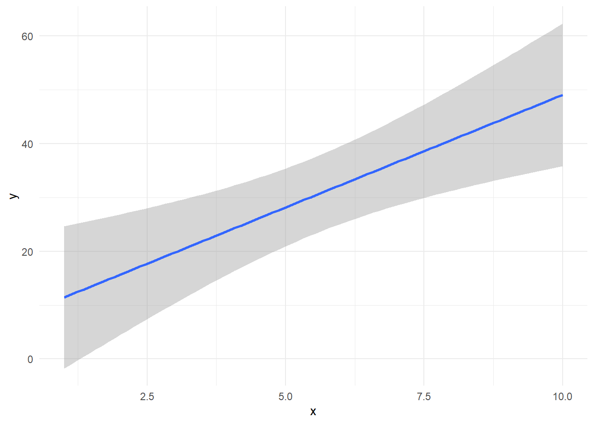
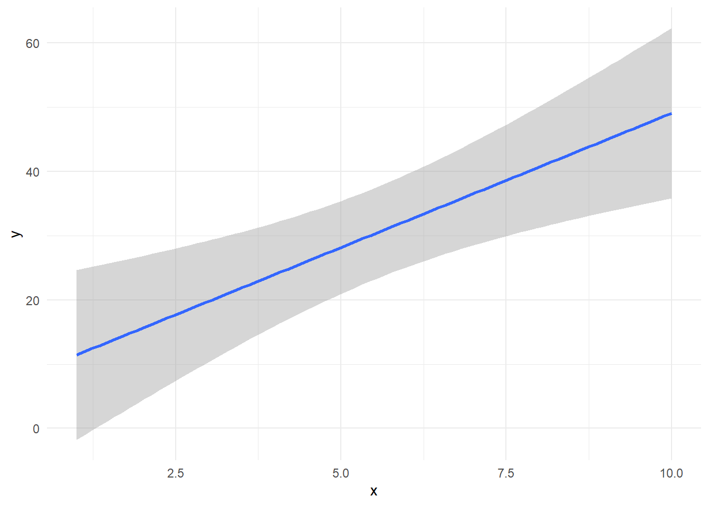
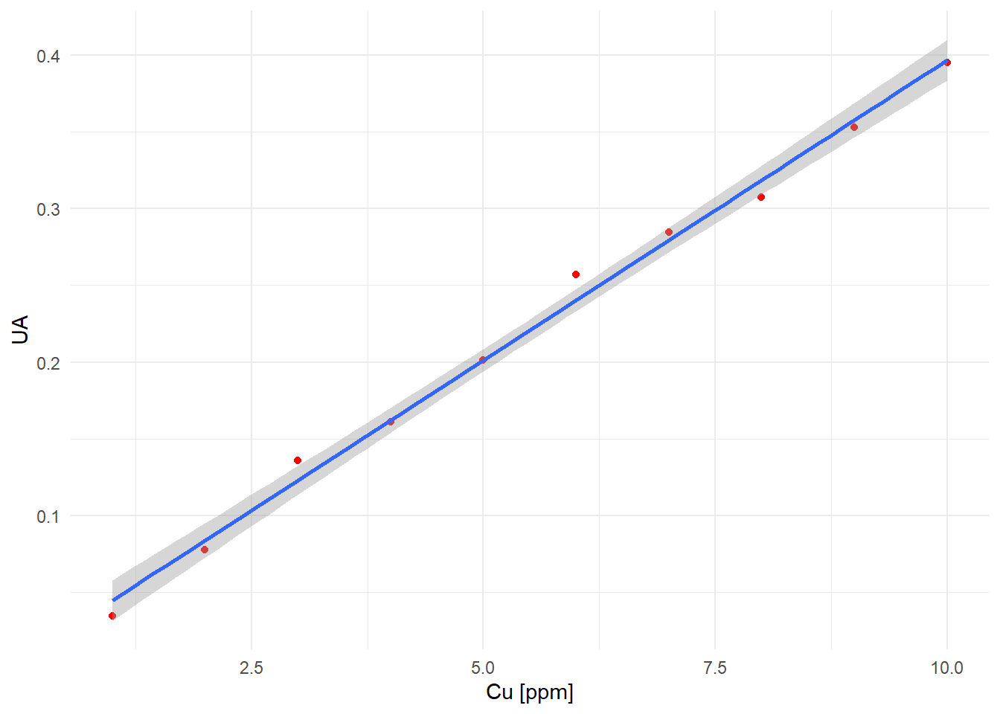

set.seed(123)
x <- 1:10
y <- 2 + 5*x + 10*rnorm(length(x), 0, 1)
d <- data.frame(x, y)
library(ggplot2)
ggplot(d, aes(x = x, y = y)) +
geom_smooth(method = 'lm') +
theme_minimal()
August 14, 2017
Ok, este es el segundo post. Advierto que aún está en rodaje… esto del copywriting no es nada fácil.
¿Qué es y cómo estimar la incertidumbre de una curva de calibración?
La incertidumbre de calibración, en adelante \(u(x_{0})\), es aquella que se propaga cuando obtenemos la concentración de un mensurando al interpolar una señal instrumental (por ejemplo, absorbancia o área cromatográfica) en una curva de calibración. Básicamente, esta incertidumbre sólo da cuenta del error aleatorio del instrumento y no incopora la incertidumbre de los calibrantes, al menos cuando se utiliza el modelo de calibración clásico:
\[ y = \beta_{0} + \beta_{1} x + \epsilon \tag{1}\]
donde \(y\) es la respuesta instrumental, \(\beta_{0}\) es el intercepto, \(\beta_{1}\) es la pendiente y \(\epsilon\) es un error aleatorio Normal que tiene media \(\mu_{\epsilon} = 0\) y varianza \(\sigma_{y/x}^2\). Note de la ecuación @ref(eq:lin) que lo único aleatorio es \(\epsilon\), por lo tanto, el intercepto \(\beta_{0}\) y la pendiente \(\beta_{1}\) son fijos. Lo que hacemos cuando aplicamos, por ejemplo, el método de los mínimos cuadrados es estimar estos parámetros y, en estadística, todas las estimaciones tienen un error asociado.
A partir de la ecuación 1 obtenemos la concentración de una muestra problema \(x_{0}\) cuya señal instrumental es \(y_{0}\):
\[ x_{0} = \frac{y_{0} - \beta_{0}}{\beta_{1}} \tag{2}\]
Si aplicáramos la guía GUM para obtener la incertidumbre estándar de calibración \(u(x_{0})\) sería bastante latoso-engorroso, pues hay unas covarianzas no muy amistosas entre pendiente e intercepto. Afortunadamente \(u(x_{0})\) puede aproximarse muy bien a través de la ecuación 3:
\[ u(x_{0}) = \frac{\sigma_{y/x}}{\beta_{1}} \sqrt{\frac{1}{n} + \frac{1}{m_{0}} + \frac{(x_{0} - \overline{x})^2} {\sum_{i}^{n} (x_{i} - \overline{x})^2}} \tag{3}\]
Vamos viendo dijo el ciego:
Esta incertidumbre se puede observar en la figura 1, la cual fue obtenida mediante simulación en lenguaje R:
set.seed(123)
x <- 1:10
y <- 2 + 5*x + 10*rnorm(length(x), 0, 1)
d <- data.frame(x, y)
library(ggplot2)
ggplot(d, aes(x = x, y = y)) +
geom_smooth(method = 'lm') +
theme_minimal()
¿Dónde se obtiene la menor incertidumbre de calibración? … ¡Correcto!
En el centro de la curva se minimiza la incertidumbre de calibración
Si obervamos la ecuación 3 podemos minimizar \(u(x_{0})\):
La tabla 1 muestra los datos de una curva de calibración para la determinación de cobre en mineral por AAS, la figura 2 describe el gráfico de calibración:
| Cu [ppm] | UA |
|---|---|
| 1 | 0.0344 |
| 2 | 0.0777 |
| 3 | 0.1356 |
| 4 | 0.1607 |
| 5 | 0.2013 |
| 6 | 0.2572 |
| 7 | 0.2846 |
| 8 | 0.3073 |
| 9 | 0.3531 |
| 10 | 0.3955 |

Ok, hay varias formas de implementar los cálculos de incertidumbre de calibración de la ecuación 3. Podríamos utilizar Excel para obtener cada uno de los términos, pero eso lo ilustraremos en otro post. En esta oportunidad utilizaremos el software R. Este software posee varias librerías o packages especializados en el cálculo de incertidumbre en química analítica, por ejemplo: metRology y chemCal. En este post utilizaremos el segundo, pues entrega en forma directa el cálculo de la incertidumbre de calibración:
Si no tienes instalado el package chemCal utiliza el comando install.packages('chemCal'). Una vez instalado procede con el siguiente código.
# Creación del modelo de calibración lineal, al que llamaremos fit.lin
# (En otro post se profundizará sobre otros modelos de calibración en R)
fit.lin <- lm(y ~ x, data = d)
# Simular un valor de respuesta de la muestra problema, es decir, y0.
# Sólo por conveniencia simularemos que y0 = 0.200 UA, es decir, más o menos
# en el centro de la curva:
y0 <- 0.200
# Cargar la librería chemCal con el comando 'library':
library(chemCal)
# Calcular la concentración de la muestra problema, x0, a partir de su señal
# instrumental y0, junto con la incertidumbre estándar de calibración u(x0) e
# incertidumbre expandida U(x0) con un 95% de confianza:
inverse.predict(fit.lin, newdata = y0)$Prediction
[1] 4.970492
$`Standard Error`
[1] 0.2618792
$Confidence
[1] 0.6038946
$`Confidence Limits`
[1] 4.366598 5.574387Bien, interpretemos la salida:
$Prediction es la concentración de la muestra problema en [ppm]$Standard Error es la incertidumbre estándar de calibración, es decir, la que se obtiene de la ecuación 3 expresada, obviamente, en las mismas unidades que los calibrantes [ppm].$Confidence es la incertidumbre expandida de calibración \(U(x0)\), es decir, \(U(x0) = k\cdot u(x0)\) donde \(k\) es el factor de cobertura con el cual se obtiene un intervalo de incertidumbre con cierta confianza (habitualmente 95%). Más de esto en otro post.$Confidence Limits es simplemente \(x0 \pm U(x0)\), es decir, \(5 \pm 0.6\) ppm (ojo con las cifras significativas… ahí va otro post).Algunas consideraciones importantes:
Esta incertidumbre de calibración \(u(x0)\) NO incorpora la incertidumbre de los calibrantes, sólo es un reflejo del error aleatorio instrumental. Punto. Es decir, asume que los calibrantes no tienen incertidumbre… lo cual todos los químicos sabemos que es ¡Farso, farso!
Si Ud. requiere incorporar también la incertidumbre de los calibrantes, debe utilizar otro modelo lineal de calibración denominado: modelo lineal con error en ambos ejes (otro post).
Ya que esta incertidumbre sólo refleja el componente aleatorio de la calibración, no están incorporados los errores sistemáticos de la preparación de estándares: error en el aforo, no considerar la pureza del reactivo, etc. (Nota mental: otro post… ¿cuántos van?).
Si, además, el método analítico incluye pesada de la muestra, digestión o extracción, aforo final, factor de dilución, etc. Ud.debe, mediante los mandamientos de la guía GUM, combinar todas estas fuentes de incertidumbre con la de calibración \(u(x0)\).
En el fondo, como se asume que los calibrantes no tienen incertidumbre, \(u(x0)\) reflejaría el comportamiento aleatorio del instrumento cuando se lee la curva “muchas” veces, siempre con los mismos calibrantes. En cada oportunidad, se obtendría una pendiente e intercepto distintos (debido a al error aleatorio \(\epsilon\)), por lo tanto, también una concentración \(x0\) distinta cada vez.
Si está interesad@ en estimar la incertidumbre de una calibración no lineal, lo discutimos paso a paso en el siguiente link.
Bueno espero que este post, en rodaje áun, haya sido de su agrado. Como siempre, siéntase libre de criticarlo. Nos vemos.